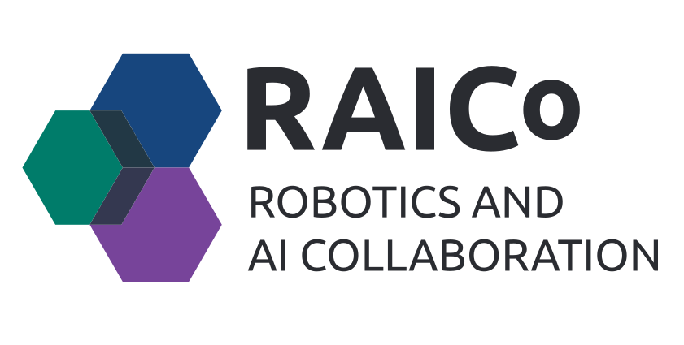

Autonomous Navigation in Dark Unknown Environments using Vision
PhD Student: Nathan Shankar
Supervisors: Pawel Ladosz | Hujun Yin
PhD Student: Nathan Shankar
Supervisors: Pawel Ladosz | Hujun Yin
Robots struggle when the lights go out, resulting in camera failure, loss of localization, and breakdown of navigation systems. This research aims to give robots the ability to perceive and navigate reliably in complete darkness by combining infrared sensing, intelligent image enhancement, and spatial awareness.
The goal is to make vision reliable anywhere without relying on a multitude of sensors. By leveraging infrared perception and learning-based enhancement, robots can reconstruct their surroundings, recognize objects, and navigate safely in environments where conventional vision fails. This research has significant implications for autonomous exploration, search and rescue, warehouse fleets, nuclear inspection, and planetary robotics.